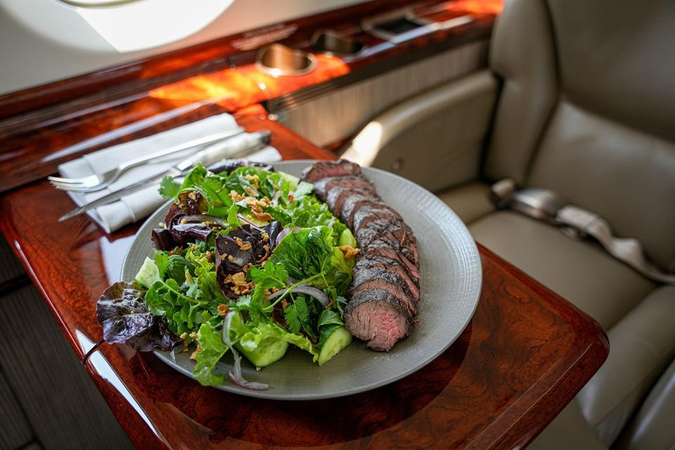

LGAV / ATH · N 37.94° E 23.94°
Active
Primary kitchen · Twenty-four-hour provisioning · Ninety-minute lead time to wheels-up.

From request to wheels-up in five steps — each handled by a member of our concierge team.
Tell us where you depart, where you land, and how many will be on board. Our network covers every Greek FBO — from Athens and Thessaloniki to the smallest island fields.

Climb · Step 02Choose from our seasonal flight menus, or build your own with our chefs — kosher, halal, vegan, allergen-free, or anything in between. Every dish is plated for cabin service.
Existing client? Sign in. New to Altitude? Create an account in under a minute. Submit your manifest, dietary requirements, and any special notes for the kitchen.
Within the hour, you receive a WhatsApp message from your assigned concierge — confirming every line of the manifest, settling timings, and answering any last requests before the kitchen begins.
After wheels-down, your invoice arrives by email — itemised, transparent, settled in your preferred currency. House accounts are billed monthly.